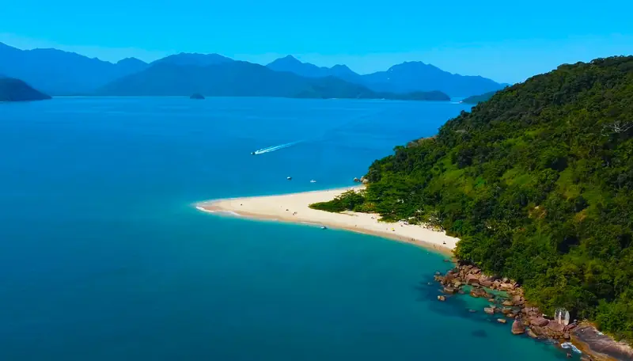
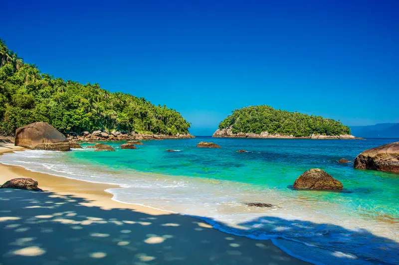
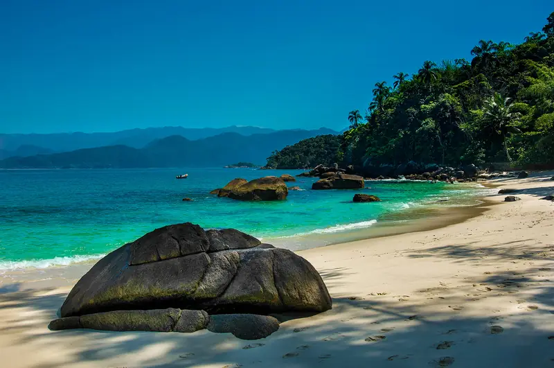
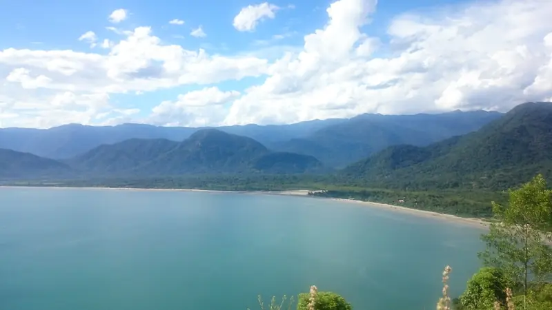
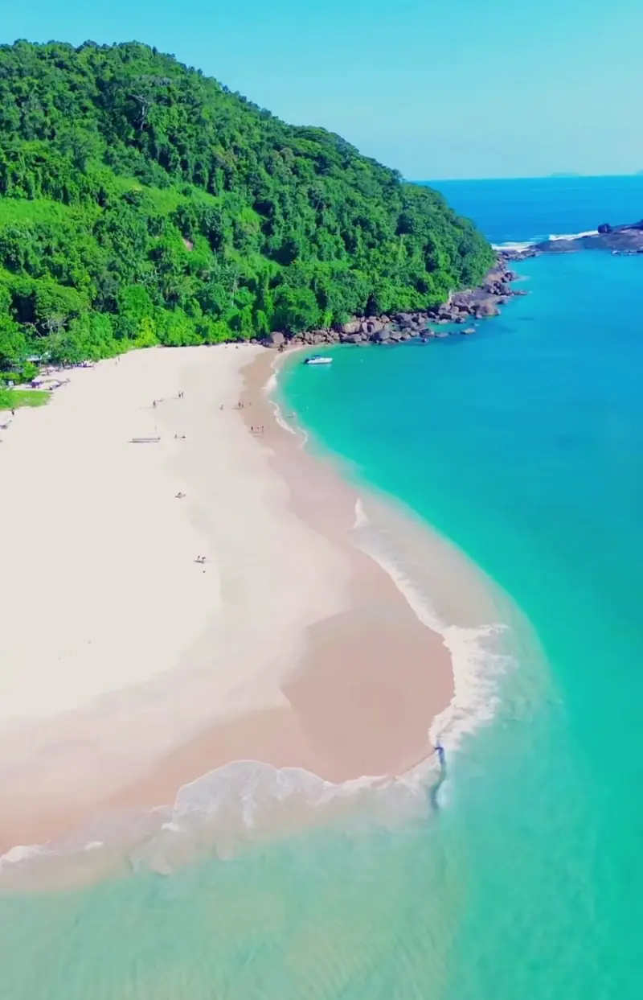

1 hora e meia
Ilha do Prumirim
Uma ilha de areia branca e água rasa, com tempo livre para descer e nadar.
O roteiro Norte de Ubatuba passa por cinco ilhas em um dia. Vá de escuna, com outros passageiros, ou alugue uma lancha só para o seu grupo.

Na escuna, o barco para no Prumirim e nas Couves. Nas outras três, a parada é para fotos ou para ver de perto.

Uma ilha de areia branca e água rasa, com tempo livre para descer e nadar.

A parada para o mergulho. Para descer na ilha, paga-se uma taxa de R$ 10 por pessoa.
A Rachada, também chamada de Ilha da Selinha, é conhecida como a menor praia do mundo. A Rapada e a dos Porcos aparecem de perto, na vista panorâmica.
O valor muda com a data e na alta temporada.
Ver o valor da minha dataSeis horas de passeio com almoço na Praia da Almada e tempo livre na Ilha dos Porcos e no Prumirim. R$ 200 por pessoa; o valor pode mudar.



Tem: R$ 10 por pessoa para desembarcar na ilha, pagos à parte.
Geralmente vai um fotógrafo a bordo. As fotos são pagas à parte.
Banheiro a bordo, espaguete flutuador, coletes salva-vidas, bote de apoio e álcool em gel.
O roteiro pode mudar quando não há condição de navegar, por segurança. No passeio de escuna, nesse caso, não há devolução do dinheiro.
Sim. A lancha é alugada só para o seu grupo, por 6 horas.